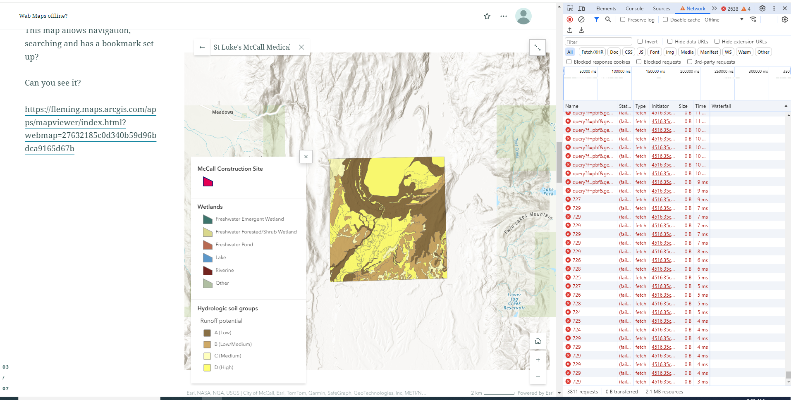
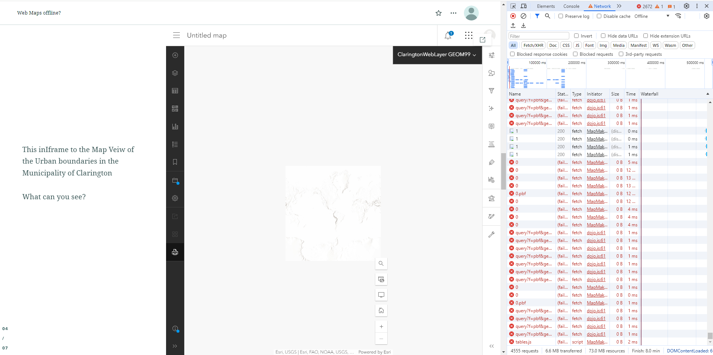
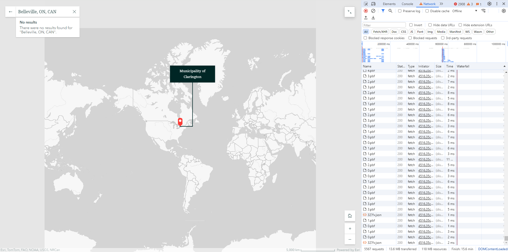
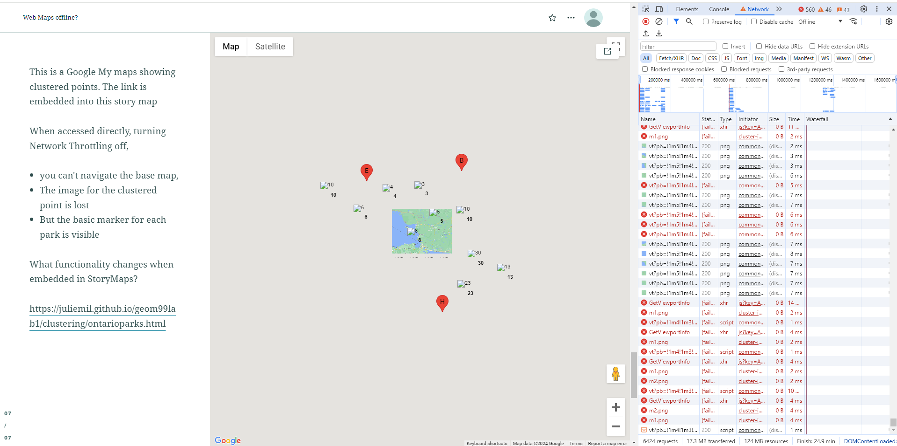

Web Based Maps - Why do they need to be online?
Explored via StoryMaps
Web based maps by design rely on frequent server requests to provide their enhanced functionality. But what Web applications require fewer server requests? Is there a web application that loads the entire map all at once, and could still function ‘offline’ until the page was refreshed? To test this we discovered a handy tool in the F12 menu - you can turn a Web page offline! This is part of the network throttling settings. Designed to help programmers test their website on slower internet connections.
But for our purposes by setting throttling to 'Offline' we are disabling server requests, by disconnecting the website from its server to understand what functions could work offline. This Story map was built where we embedded web maps from may different places, and then disabled server requests, to see if they load differently and allow offline navigation
- ArcGIS Online Map with navigation enabled
- ArcGIS Online Map with Searching Enabled
- ArcGIS Online Map without navigation enabled
- ArcGIS Online Web Application with bookmarks
- Embeded links to Google MyMaps
Try it out!
Story maps requires server requests to pull content. To test a map,
- Scroll to a map, and let it load fully
- Open the F12 menu - go to the network Ribbon
- Click the 'No throttling' dropdown menu
- Select 'Offline' to disable server requests
- Test the Map! What breaks and What works?
TL;DR Story Map results
None of the maps work well with server request disabled, except the Express map, but this is due to the simplicity of the map, (a grey basemap with 1 labeled point and line feature) and is not scalable. The most surprising results came from the Google MyMaps. Where the entire point layer once loaded was navigable, and while the clustered point icon was lost, they were still calculating and displaying the correct number. However the basemap was lost just like with ArcGIS Online maps. This indicates that if you didn't need a basemap, it may be possible to load all your operational vector layers at once, and they would be 'accessible offline' (until the page refreshes).
Full StoryMaps Offline Results
- ArcGIS Online Web Map - not navigable
- Acts like an image, can visually see all components
- Can only access popups of one operational layer
- ArcGIS Online Web map - navigable
- Popups do not work when offline
- As soon as you zoom the operational layers vanish
- But the base map does zoom in and out, scaling properly!
- ArcGIS Online Web app

-
Notes
- The construction site layer, and Wetlands layer both disappear
- The Runoff potential layer is still visible ….. why?
- The search function does not work
- The legend is still present
- And can still zoom and the base map scales properly for
the full extent of the web app, but only within a certain zoom extent
- The hill shade has a larger zoom extent than the basemap
- Cannot access the bookmark even when online, but the home button works offline
- ArcGIS Onilne Map Viewer Iframe

-
Notes
- Offline - no popups
- Can zoom a little before the map layer disappears
- Basemap is visible and scales properly for 7 zoom levels
- Oddly the basemap of the world appears when you zoom out far enough
- Hill shade appears at all zoom levels
- All ArcGIS Online customization functionality is gone in offline - including print
- Express Map

Notes
- Vector markup layer with point marker, always visible
- Looked like all the tiles centered on the home extent of the map are loaded initially - navigate away from the home extent and the basemap disappears
- Fullscreen still works offline
- Home button works
- Search does not work offline
- Code came in as an image of the text with a copy function - whoops
- Copy function works without additional server requests
- Google my maps - embedded Link to a clustered Ontario Parks Map

-
Notes
- The clustering function still works, (the number is calculated) - but the graphic for the clustered point is lost
- The individual basic markers still appear once you zoom in farther
- The basemap that was loaded when server requests were turned off is always visible
- Full screen still works